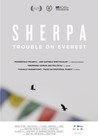
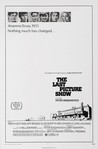
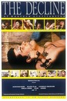
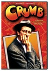

Movie Releases By Score


|
1.
Citizen Kane
Release Date:
September 4, 1941
Following the death of a publishing tycoon, news reporters scramble to discover the meaning of his final utterance.
|

|
2.
The Godfather
Release Date:
March 11, 1972

Francis Ford Coppola's epic features Marlon Brando in his Oscar-winning role as the patriarch of the Corleone family. Director Coppola paints a chilling portrait of the Sicilian clan's rise and near fall from power in America, masterfully balancing the story between the Corleone's family life and the ugly crime business in which they are engaged. Based on Mario Puzo's best-selling novel and featuring career-making performances by Al Pacino, James Caan and Robert Duvall, this searing and brilliant film garnered ten Academy Award nominations, and won three including Best Picture of 1972. [Paramount Pictures]
|

|
3.
Rear Window
Release Date:
September 1, 1954
A wheelchair-bound photographer spies on his neighbours from his apartment window and becomes convinced one of them has committed murder.
|

|
4.
Casablanca
Release Date:
January 23, 1943
A Casablanca, Morocco casino owner in 1941 shelters his former lover and her husband, a Czechoslovakian freedom fighter, from the Nazis.
|

|
5.
Boyhood
Release Date:
July 11, 2014
Filmed over 12 years with the same cast, Richard Linklater's Boyhood is a groundbreaking story of growing up as seen through the eyes of a child named Mason (Ellar Coltrane), who literally grows up on screen before our eyes. Starring Ethan Hawke and Patricia Arquette as Mason's parents and newcomer Lorelei Linklater as his sister Samantha, Boyhood charts the rocky terrain of childhood like no other film has before and is both a nostalgic time capsule of the recent past and an ode to growing up and parenting. [IFC Films]
|

|
6.
Three Colors: Red
Release Date:
November 23, 1994
Krzysztof Kieslowski closes his Three Colors trilogy in grand fashion, with an incandescent meditation on fate and chance, starring Irène Jacob as a sweet-souled yet somber runway model in Geneva whose life dramatically intersects with that of a bitter retired judge, played by Jean-Louis Trintignant. Meanwhile, just down the street, a seemingly unrelated story of jealousy and betrayal unfolds. Red is an intimate look at forged connections and a splendid final statement from a remarkable filmmaker at the height of his powers. [Criterion]
|

|
7.
Vertigo
Release Date:
May 28, 1958

Vertigo creates a dizzying web of mistaken identity, passion and murder after an acrophobic detective rescues a mysterious blonde from the bay. (Universal Pictures)
|

|
8.
Notorious
Release Date:
September 6, 1946
A woman is asked to spy on a group of Nazi friends in South America. How far will she have to go to ingratiate herself with them?
|

|
9.
Singin' in the Rain
Release Date:
April 11, 1952

A silent film production company and cast make a difficult transition to sound.
|

|
10.
The Treasure of the Sierra Madre
Release Date:
January 24, 1948
Fred Dobbs and Bob Curtin, two Americans searching for work in Mexico, convince an old prospector to help them mine for gold in the Sierra Madre Mountains.
|

|
11.
Moonlight
Release Date:
October 21, 2016
Moonlight is the tender, heartbreaking story of a young man’s struggle to find himself, told across three defining chapters in his life as he experiences the ecstasy, pain, and beauty of falling in love, while grappling with his own sexuality.
|

|
12.
Pinocchio
Release Date:
February 23, 1940
A living puppet, with the help of a cricket as his conscience, must prove himself worthy to become a real boy.
|

|
13.
Touch of Evil
Release Date:
February 1, 1958

This film noir portrait of corruption and morally-compromised obsessions stars Welles as Hank Quinlan, a crooked police chief who frames a Mexican youth as part of an intricate criminal plot. Charlton Heston plays an honorable Mexican narcotics investigator who clashes with the bigoted Quinlan after probing into his dark past. A memorable supporting cast including Janet Leigh as Heston's inquisitive wife, Akim Tamiroff as a seedy underworld leader, Zsa Zsa Gabor and Marlene Dietrich as an enigmatic gypsy complete this fascinating drama engulfed in haunting cinematography and a magnificently eerie score by Henry Mancini.
|

|
14.
Pan's Labyrinth
Release Date:
December 29, 2006
Following a bloody civil war, young Ofelia enters a world of unimaginable cruelty when she moves in with her new stepfather, a tyrannical military officer. Armed with only her imagination, Ofelia discovers a mysterious labyrinth and meets a faun who sets her on a path to saving herself and her ailing mother. But soon, the lines between fantasy and reality begin to blur, and before Ofelia can turn back, she finds herself at the center of a ferocious battle between good and evil. [Warner Bros.]
|

|
15.
North by Northwest
Release Date:
August 6, 1959
A hapless New York advertising executive is mistaken for a government agent by a group of foreign spies, and is pursued across the country while he looks for a way to survive.
|

|
16.
All About Eve
Release Date:
October 27, 1950
An ingenue insinuates herself into the company of an established but aging stage actress and her circle of theater friends.
|

|
17.
Hoop Dreams
Release Date:
October 14, 1994
Two inner-city Chicago boys with hopes of becoming professional basketball players struggle to become college players.
|

|
18.
My Left Foot
Release Date:
March 30, 1990
True story of cerebral palsied Christy Brown, who overcame his illness and poverty to become an accomplished artist, poet and writer.
|

|
19.
The Third Man
Release Date:
September 3, 1949
Pulp novelist Holly Martins travels to shadowy, postwar Vienna, only to find himself investigating the mysterious death of an old friend, Harry Lime.
|

|
20.
Gone with the Wind
Release Date:
January 17, 1940
A Southern belle struggles with the devastation of the Civil War and Reconstruction. This classic won 8 Academy Awards, including Best Picture.
|

|
21.
4 Months, 3 Weeks and 2 Days
Release Date:
January 23, 2008
During the final days of communism in Romania, two college roommates Otilia and Gabita are busy preparing for a night away. But rather than planning for a holiday, they are making arrangements for Gabita's illegal abortion and unwittingly, both find themselves burrowing deep down a rabbit hole of unexpected revelations. [IFC Films]
|

|
22.
Some Like It Hot
Release Date:
March 29, 1959
When two male musicians witness a mob hit, they flee the state in an all-female band disguised as women, but further complications set in.
|

|
23.
Psycho
Release Date:
September 8, 1960
A Phoenix secretary embezzles $40,000 from her employer's client, goes on the run, and checks into a remote motel run by a young man, Norman Bates (Anthony Perkins) under the domination of his mother.
|

|
24.
American Graffiti
Release Date:
August 11, 1973
A couple of high school grads spend one final night cruising the strip with their buddies before they go off to college.
|

|
25.
Dumbo
Release Date:
October 31, 1941
This simple animated tale is set in a circus and spotlights a baby elephant, Dumbo, who is mocked and ridiculed because his ears are too big, only to be assisted by a mouse to achieve his full potential.
|

|
26.
Roma
Release Date:
November 21, 2018
Roma follows Cleo (Yalitza Aparicio), a young domestic worker for a family in the middle-class neighborhood of Roma in Mexico City. Delivering an artful love letter to the women who raised him, Cuarón draws on his own childhood to create a vivid and emotional portrait of domestic strife and social hierarchy amidst political turmoil of the 1970s. [Netflix]
|

|
27.
Ran
Release Date:
December 20, 1985
An adaptation of William Shakespeare’s King Lear, Ran considers the disastrous consequences of Lord Hidetora Ichimonji’s (Tatsuya Nakadai) decision to split his kingdom among his three sons.
|

|
28.
12 Angry Men
Release Date:
April 1, 1957
12 Angry Men, by Sidney Lumet, is a behind-closed-doors look at the American legal system. This iconic adaptation of Reginald Rose’s teleplay stars Henry Fonda as the dissenting member on a jury of white men ready to pass judgment on a Puerto Rican teenager charged with murdering his father. The result is a saga of epic proportions that plays out over a tense afternoon in one sweltering room.
|

|
29.
Manchester by the Sea
Release Date:
November 18, 2016
After the death of his older brother Joe (Kyle Chandler), Lee Chandler (Casey Affleck) is shocked to learn that Joe has made him sole guardian of his nephew Patrick (Lucas Hedges). Taking leave of his job, Lee reluctantly returns to Manchester-by-the-Sea to care for Patrick, a spirited 15-year-old, and is forced to deal with a past that separated him from his wife Randi (Michelle Williams) and the community where he was born and raised. Bonded by the man who held their family together, Lee and Patrick struggle to adjust to a world without him.
|

|
30.
Rosemary's Baby
Release Date:
June 12, 1968
A young couple move into an apartment, only to be surrounded by peculiar neighbors and occurrences. When the wife becomes mysteriously pregnant, paranoia over the safety of her unborn child begins to control her life.
|

|
31.
The Maltese Falcon
Release Date:
October 18, 1941
A private detective (Humphrey Bogart) takes on a case that involves him with three eccentric criminals, a gorgeous liar, and their quest for a priceless statuette.
|
|
|
32.
12 Years a Slave
Release Date:
October 18, 2013
In the pre-Civil War United States, Solomon Northup, a free black man living in upstate New York, is abducted and sold into slavery.
|

|
33.
Amazing Grace
Release Date:
November 23, 2018
A documentary presenting Aretha Franklin with choir at the New Bethel Baptist Church in Watts, Los Angeles in January 1972.
|

|
34.
Dr. Strangelove or: How I Learned to Stop Worrying and Love the Bomb
Release Date:
January 29, 1964
Through a series of military and political accidents, a psychotic general - U.S. Air Force Commander Jack D. Ripper (Hayden) - triggers an ingenious, irrevocable scheme to attack Russia's strategic targets with nuclear bombs. The U.S. President (Sellers) and Dr. Strangelove (Sellers), a wheelchair-bound nuclear scientist who has bizarre ideas about man's future, work with the Soviet premier in a desperate effort to save the world.
|

|
35.
Ratatouille
Release Date:
June 29, 2007
Despite his sensational sniffer and sophisticated palate, Remy's dreams of becoming a chef seem hopeless due to one small detail--he's a rat! Through a twist of fate, he ends up in the world-famous restaurant of his late hero, Auguste Gusteau. With a dash of culinary courage and the help of garbage boy Linguini, Remy whips up exquisite meals that impress even the nasty chef Skinner and food critic Anton Ego. Together they conquer the kitchen and prove that big dreams can come true no matter how small you are. [Disney]
|

|
36.
A Streetcar Named Desire
Release Date:
September 19, 1951
Disturbed Blanche DuBois (Vivien Leigh) moves in with her sister in New Orleans and is tormented by her brutish brother-in-law (Marlon Brando) while her reality crumbles around her.
|

|
37.
Mean Streets
Release Date:
October 14, 1973
Charlie (Harvey Keitel) is working his way up the ranks of a local mob. Teresa (Amy Robinson) is the girlfriend his family deems unsuitable because of her epilepsy. Johnny Boy (Robert De Niro) is a small-time gambler in big-time debt to loan sharks. This is a story Martin Scorsese lived, a semi-biographical tale of the first-generation sons and daughters of New York's Little Italy. [Warner Bros.]
|

|
38.
Gravity
Release Date:
October 4, 2013
Dr. Ryan Stone (Sandra Bullock) is a brilliant medical engineer on her first shuttle mission, with veteran astronaut Matt Kowalsky (George Clooney) in command of his last flight before retiring. But on a seemingly routine spacewalk, disaster strikes. The shuttle is destroyed, leaving Stone and Kowalsky completely alone - tethered to nothing but each other and spiraling out into the blackness. The deafening silence tells them they have lost any link to Earth - and any chance for rescue. As fear turns to panic, every gulp of air eats away at what little oxygen is left. But the only way home may be to go further out into the terrifying expanse of space.
|

|
39.
Fantasia
Release Date:
November 13, 1940
A collection of animated interpretations of great works of Western classical music.
|

|
40.
Spirited Away
Release Date:
September 20, 2002
A young girl, Chihiro, becomes trapped in a strange new world of spirits. When her parents undergo a mysterious transformation, she must call upon the courage she never knew she had to free herself and return her family to the outside world. [Walt Disney Studios]
|

|
41.
The Wild Bunch
Release Date:
June 18, 1969
An aging group of outlaws look for one last big score as the "traditional" American West is disappearing around them.
|

|
42.
Beauty and the Beast
Release Date:
November 22, 1991
This 'tale as old as time' follows the adventures of Belle, a bright young woman who finds herself imprisoned in a castle of a mysterious beast. With the assistance of the castle's enchanted staff, a delightful and tender romance develops between these two unlikely friends and Belle soon learns the most important lesson of all - that true beauty comes from within.
|

|
43.
Carol
Release Date:
November 20, 2015
Set in 1950s New York, two women from very different backgrounds find themselves in the throes of love. A young woman in her 20s, Therese Belivet (Rooney Mara), is a clerk working in a Manhattan department store and dreaming of a more fulfilling life when she meets Carol (Cate Blanchett), an alluring woman trapped in a loveless, convenient marriage. As an immediate connection sparks between them, the innocence of their first encounter dims and their connection deepens. While Carol breaks free from the confines of marriage, her husband (Kyle Chandler) threatens her competence as a mother when Carol’s involvement with Therese and close relationship with her best friend Abby (Sarah Paulson) comes to light. As Carol leaves the comfort of home to travel with Therese, an internal journey of self-discovery coincides with her new sense of space. [TWC]
|

|
44.
Toy Story
Release Date:
November 22, 1995
Led by Woody, Andy's toys live happily in his room until Andy's birthday brings Buzz Lightyear onto the scene. Afraid of losing his place in Andy's heart, Woody plots against Buzz. But when circumstances separate Buzz and Woody from their owner, the duo eventually learns to put aside their differences. [Pixar]
|

|
45.
The Grapes of Wrath
Release Date:
March 15, 1940
A poor Midwest family is forced off their land. They travel to California, suffering the misfortunes of the homeless in the Great Depression.
|

|
46.
The Social Network
Release Date:
October 1, 2010
On a fall night in 2003, Harvard undergrad and computer programming genius Mark Zuckerberg (Jesse Eisenberg) sits down at his computer and heatedly begins working on a new idea. In a fury of blogging and programming, what begins in his dorm room soon becomes a global social network and a revolution in communication. A mere six years and 500 million friends later, Mark Zuckerberg is the youngest billionaire in history... but for this entrepreneur, success leads to both personal and legal complications. [Columbia Pictures]
|

|
47.
My Fair Lady
Release Date:
December 25, 1964
A snobbish phonetics professor agrees to a wager that he can take a flower girl and make her presentable in high society.
|

|
48.
I Am Not Your Negro
Release Date:
December 9, 2016
Director Raoul Peck envisions the book James Baldwin never finished - a radical narration about race in America, using the writer’s original words. He draws upon James Baldwin’s notes on the lives and assassinations of Medgar Evers, Malcolm X, and Martin Luther King Jr to explore and bring a fresh and radical perspective to the current racial narrative in America. [Magnolia Pictures]
|

|
49.
The Souvenir
Release Date:
May 17, 2019
A shy but ambitious film student (Honor Swinton Byrne) begins to find her voice as an artist while navigating a turbulent courtship with a charismatic but untrustworthy man (Tom Burke). She defies her protective mother (Tilda Swinton) and concerned friends as she slips deeper and deeper into an intense, emotionally fraught relationship that comes dangerously close to destroying her dreams. [A24]
|

|
50.
Double Indemnity
Release Date:
July 6, 1944
An insurance representative lets himself be talked into a murder/insurance fraud scheme that arouses an insurance investigator's suspicions.
|

|
51.
Killer of Sheep
Release Date:
March 30, 2007
Killer of Sheep examines the black Los Angeles ghetto of Watts in the mid-1970s through the eyes of Stan, a sensitive dreamer who is growing detached and numb from the psychic toll of working at a slaughterhouse. The film offers no solutions; it merely presents life -- sometimes hauntingly bleak, sometimes filled with transcendent joy and gentle humor. (Milestone Film & Video)
|

|
52.
Snow White and the Seven Dwarfs
Release Date:
February 4, 1938
Exiled into the dangerous forest by her wicked stepmother, a princess is rescued by seven dwarf miners who make her part of their household.
|

|
53.
Zero Dark Thirty
Release Date:
December 19, 2012
For a decade, an elite team of intelligence and military operatives, working in secret across the globe, devoted themselves to a single goal: to find and eliminate Osama bin Laden. [Columbia Pictures]
|

|
54.
A Separation
Release Date:
December 30, 2011
Set in contemporary Iran, A Separation is a compelling drama about the dissolution of a marriage. Simin wants to leave Iran with her husband Nader and daughter Termeh. Simin sues for divorce when Nader refuses to leave behind his Alzheimer-suffering father. Her request having failed, Simin returns to her parents' home, but Termeh decides to stay with Nader. When Nader hires a young woman to assist with his father in his wife's absence, he hopes that his life will return to a normal state. However, when he discovers that the new maid has been lying to him, he realizes that there is more on the line than just his marriage. [Sony Pictures Classic]
|

|
55.
WALL-E
Release Date:
June 27, 2008
After hundreds of lonely years of doing what he was built for, Wall-E discovers a new purpose in life when he meets a sleek search robot named EVE. [Walt Disney Pictures]
|

|
56.
Before Midnight
Release Date:
May 24, 2013
In this follow-up to Before Sunrise and Before Sunset, we meet Jesse and Celine nine years later in Greece. Almost two decades have passed since their first meeting on that train bound for Vienna.
|

|
57.
Dunkirk
Release Date:
July 21, 2017
Dunkirk opens as hundreds of thousands of British and Allied troops are surrounded by enemy forces. Trapped on the beach with their backs to the sea they face an impossible situation as the enemy closes in. [Warner Bros.]
|

|
58.
The Man Who Shot Liberty Valance
Release Date:
April 22, 1962
A senator, who became famous for killing a notorious outlaw, returns for the funeral of an old friend and tells the truth about his deed.
|

|
59.
45 Years
Release Date:
December 23, 2015
There is just one week until Kate Mercer's (Charlotte Rampling) 45th wedding anniversary and the planning for the party is going well. But then a letter arrives for her husband (Tom Courtenay). The body of his first love has been discovered, frozen and preserved in the icy glaciers of the Swiss Alps. By the time the party is upon them, five days later, there may not be a marriage left to celebrate. [IFC Films]
|

|
60.
Taxi Driver
Release Date:
February 7, 1976
Scorsese’s 1976 masterpiece is the all-too-real story of a psychotic New York cabby who is driven to violence in an attempt to rescue a teenage prostitute. [Sony]
|

|
61.
The Manchurian Candidate
Release Date:
October 24, 1962
John Frankenheimer's gripping political thriller about a group of American soldiers who are captured and brainwashed into becoming sleeper agents. (MGM)
|

|
62.
Pulp Fiction
Release Date:
October 14, 1994
Several inter-locking stories of crime and intrigue form a temporal mosaic set in the Los Angeles underworld.
|

|
63.
Mr. Turner
Release Date:
December 19, 2014
Mr. Turner explores the last quarter century of the life of the great if eccentric British painter J.M.W. Turner (Timothy Spall). Profoundly affected by the death of his father, loved by a housekeeper he takes for granted and occasionally exploits sexually, he forms a close relationship with a seaside landlady with whom he eventually lives incognito in Chelsea, where he dies. Throughout this, he travels, paints, stays with the country aristocracy, visits brothels, is a popular if anarchic member of the Royal Academy of Arts, has himself strapped to the mast of a ship so that he can paint a snowstorm, and is both celebrated and reviled by the public and by royalty.
|

|
64.
The Hurt Locker
Release Date:
June 26, 2009
When a new sergeant, James (Jeremy Renner), takes over a highly trained bomb disposal team amidst violent conflict, he surprises his two subordinates, Sanborn (Anthony Mackie) and Eldridge (Brian Geraghty), by recklessly plunging them into a deadly game of urban combat. James behaves as if he's indifferent to death. As the men struggle to control their wild new leader, the city explodes into chaos, and James' true character reveals itself in a way that will change each man forever. [Summit Entertainment]
|

|
65.
Shadow of a Doubt
Release Date:
January 15, 1943
A young woman discovers her visiting uncle may not be the man he seems to be.
|

|
66.
Inside Out
Release Date:
June 19, 2015
Growing up can be a bumpy road, and it’s no exception for Riley, who is uprooted from her Midwest life when her father starts a new job in San Francisco. Like all of us, Riley is guided by her emotions: Joy (Amy Poehler), Fear (Bill Hader), Anger (Lewis Black), Disgust (Mindy Kaling) and Sadness (Phyllis Smith). The emotions live in Headquarters, the control center inside Riley’s mind, where they help advise her through everyday life. As Riley and her emotions struggle to adjust to a new life in San Francisco, turmoil ensues in Headquarters. Although Joy, Riley’s main and most important emotion, tries to keep things positive, the emotions conflict on how best to navigate a new city, house, and school. [Pixar]
|

|
67.
Sideways
Release Date:
October 22, 2004
Two old friends set off on a wine-tasting road trip...only to veer dizzily sideways into a wry, comedic exploration of the crazy vicissitudes of love and friendship, the damnable persistence of loneliness and dreams and the enduring war between Pinot and Cabernet. [Fox Searchlight Pictures]
|

|
68.
Apocalypse Now
Release Date:
August 15, 1979
During the Vietnam War, Captain Willard is sent on a dangerous mission into Cambodia to assassinate a renegade colonel who has set himself up as a god among a local tribe.
|

|
69.
The Gunfighter
Release Date:
June 23, 1950
Notorious gunfighter Jimmy Ringo rides into town to find his true love, who doesn't want to see him. He hasn't come looking for trouble, but trouble finds him around every corner.
|
70.
We Were Here
Release Date:
September 9, 2011
We Were Here documents the coming of what was called the “Gay Plague” in the early 1980s. It illuminates the profound personal and community issues raised by the AIDS epidemic as well as the broad political and social upheavals it unleashed. It offers a cathartic validation for the generation that suffered through, and responded to, the onset of AIDS. It opens a window of understanding to those who have only the vaguest notions of what transpired in those years. It provides insight into what society could, and should, offer its citizens in the way of medical care, social services, and community support. [Red Flag Releasing]
|
|

|
71.
Lady Bird
Release Date:
November 3, 2017
Christine "Lady Bird" McPherson (Saoirse Ronan) fights against but is exactly like her wildly loving, deeply opinionated and strong-willed mom (Laurie Metcalf), a nurse working tirelessly to keep her family afloat after Lady Bird's father (Tracy Letts) loses his job. Set in Sacramento, California in 2002, amidst a rapidly shifting American economic landscape, Lady Bird is an affecting look at the relationships that shape us, the beliefs that define us, and the unmatched beauty of a place called home. [A24]
|

|
72.
The Lord of the Rings: The Return of the King
Release Date:
December 17, 2003
Sauron's forces have laid siege to Minas Tirith, the capital of Gondor, in their efforts to eliminate the race of men. The once-great kingdom, watched over by a fading steward, has never been in more desperate need of its king. But can Aragorn (Viggo Mortensen) answer the call of his heritage and become what he was born to be? In no small measure, the fate of Middle-earth rests on his broad shoulders. [New Line Cinema]
|
|
|
73.
Carlos
Release Date:
October 15, 2010
Carlos tells the story of Ilich Ramirez Sanchez who, for two decades, was one of the most wanted terrorists, on the planet. Between 1974 and 1994, he lived several lives under various pseudonyms, weaving his way through the complexities of international politics of the period. [IFC Films]
|

|
74.
Maborosi
Release Date:
March 21, 1997
A young woman's husband apparently commits suicide without warning or reason, leaving behind his wife and infant. Yumiko remarries and moves from Osaka to a small fishing village, yet continues to search for meaning in a lonely world.
|
|
|
75.
Faces Places
Release Date:
October 6, 2017
89-year old Agnes Varda, one of the leading figures of the French New Wave, and acclaimed 33 year-old French photographer and muralist JR teamed up to co-direct this enchanting documentary/road movie. Kindred spirits, Varda and JR share a lifelong passion for images and how they are created, displayed and shared. Together they travel around the villages of France in JR’s photo truck meeting locals, learning their stories and producing epic-size portraits of them. The photos are prominently displayed on houses, barns, storefronts and trains revealing the humanity in their subjects, and themselves. Faces Places documents these heart-warming encounters as well as the unlikely, tender friendship they formed along the way. [Cohen Media Group]
|

|
76.
Amour
Release Date:
December 19, 2012
Georges and Anne are in their eighties. They are cultivated, retired music teachers. Their daughter, who is also a musician, lives abroad with her family. One day, Anne has an attack. The couple's bond of love is severely tested. [Sony Pictures Classics]
|

|
77.
The Servant
Release Date:
March 16, 1964
The Servant looks at the decaying British class system through the relationship between an aristocrat and his scheming butler.
|

|
78.
The Magnificent Ambersons
Release Date:
July 10, 1942
The spoiled young heir to the decaying Amberson fortune comes between his widowed mother and the man she has always loved.
|
|
|
79.
Reversal of Fortune
Release Date:
October 17, 1990
Jeremy Irons plays socialite Claus von Bulow, seeking legal exoneration in the most sensational attempted murder scandal of the 1980s. (Warner Bros.)
|

|
80.
Shoplifters
Release Date:
November 23, 2018
After one of their shoplifting sessions, Osamu and his son come across a little girl in the freezing cold. At first reluctant to shelter the girl, Osamu’s wife agrees to take care of her after learning of the hardships she faces.Although the family is poor, barely making enough money to survive through petty crime, they seem to live happily together until an unforeseen incident reveals hidden secrets, testing the bonds that unite them.
|

|
81.
Shoah: Four Sisters
Release Date:
November 14, 2018
Starting in 1999, Claude Lanzmann made several films that could be considered satellites of Shoah, comprised of interviews conducted in the 1970s that didn’t make it into the final, monumental work. In the last years of the late director’s life, he decided to devote a film to four women from four different areas of Eastern Europe with four different destinies, each finding herself improbably alive after war’s end: Ruth Elias from Ostravia, Czechoslovakia; Paula Biren from Lodz, Poland; Ada Lichtman from further south in Krakow; and Hannah Marton from Cluj, or Kolozsvár, in Transylvania. Survivors of unimaginable Nazi horrors during the Holocaust, they tell their individual stories and become crucial witnesses to the barbarism they experienced. Each possesses a vivid intelligence and a commitment to candor that make their accounts of what they suffered through both searing and unforgettable. Four Sisters now arrives on the screen to remind audiences of the immense courage it took for these witnesses to return to their past as they share their deeply moving personal tragedies. The frankness of their words, their intensely scrutinized faces, and their bravery as they revisit unimaginable experiences will make them lasting presences in the moral universe of younger generations. [Cohen Media Group]
|

|
82.
Crouching Tiger, Hidden Dragon
Release Date:
December 8, 2000
In 19th century China, a magical sword given by a warrior (Chow Yun-Fat) to his lover (Michelle Yeoh) is stolen and the quest to find it ensues. The search leads to the House of Yu where the story travels in a different direction with the introduction of a mysterious assassin and another love story.
|

|
83.
Toni Erdmann
Release Date:
December 25, 2016
Winfried (Peter Simonischek) doesn’t see much of his working daughter Ines (Sandra Hüller). The suddenly student-less music teacher decides to surprise her with a visit after the death of his old dog. It’s an awkward move because serious career woman Ines is working on an important project as a corporate strategist in Bucharest. The geographical change doesn’t help the two to see more eye to eye. Practical joker Winfried loves to annoy his daughter with corny pranks. What’s worse are his little jabs at her routine lifestyle of long meetings, hotel bars and performance reports. Father and daughter reach an impasse, and Winfried agrees to return home to Germany. Enter flashy Toni Erdmann: Winfried’s smooth-talking alter ego. Disguised in a tacky suit, weird wig and even weirder fake teeth, Toni barges into Ines’ professional life, claiming to be her CEO’s life coach. As Toni, Winfried is bolder and doesn’t hold back, but Ines meets the challenge. The harder they push, the closer they become. In all the madness, Ines begins to understand that her eccentric father might deserve some place in her life after all. [Sony Pictures Classics]
|

|
84.
Yi Yi
Release Date:
October 6, 2000
This film portrays life through portraits of the individual members of a Taiwanese family, each representing a stage from birth to death. [WinStar Cinema]
|

|
85.
Spotlight
Release Date:
November 6, 2015
Spotlight tells the riveting true story of the Pulitzer Prize-winning Boston Globe investigation that would rock the city and cause a crisis in one of the world’s oldest and most trusted institutions. When the newspaper’s tenacious “Spotlight” team of reporters delve into allegations of abuse in the Catholic Church, their year-long investigation uncovers a decades-long cover-up at the highest levels of Boston's religious, legal, and government establishment, touching off a wave of revelations around the world. [Open Road Films]
|

|
86.
Call Me by Your Name
Release Date:
November 24, 2017
It’s the summer of 1983 in the north of Italy, and Elio Perlman (Timothée Chalamet), a precocious 17- year-old American-Italian, spends his days in his family’s 17th century villa transcribing and playing classical music, reading, and flirting with his friend Marzia (Esther Garrel). Elio enjoys a close relationship with his father (Michael Stuhlbarg), an eminent professor specializing in Greco-Roman culture, and his mother Annella (Amira Casar), a translator, who favor him with the fruits of high culture in a setting that overflows with natural delights. While Elio’s sophistication and intellectual gifts suggest he is already a fully-fledged adult, there is much that yet remains innocent and unformed about him, particularly about matters of the heart. One day, Oliver (Armie Hammer), a charming American scholar working on his doctorate, arrives as the annual summer intern tasked with helping Elio’s father. Amid the sun-drenched splendor of the setting, Elio and Oliver discover the heady beauty of awakening desire over the course of a summer that will alter their lives forever.
|
|
|
87.
La La Land
Release Date:
December 9, 2016
Mia (Emma Stone), an aspiring actress, serves lattes to movie stars in between auditions, and Sebastian (Ryan Gosling), a dedicated jazz musician, scrapes by playing cocktail piano gigs in dingy bars, but as success mounts they are faced with decisions that begin to fray the fragile fabric of their love affair, and the dreams they worked so hard to maintain in each other threaten to rip them apart.
|

|
88.
Inside Llewyn Davis
Release Date:
December 6, 2013
Llewyn Davis is at a crossroads. Guitar in tow, huddled against the unforgiving New York winter of 1961, he struggles to make it as a musician against seemingly insurmountable obstacles - some of them of his own making.
|

|
89.
Schindler's List
Release Date:
December 15, 1993
Steven Spielberg's epic drama tells the compelling true story of German businessman Oskar Schindler (Neeson) who comes to Nazi-occupied Poland looking for economic prosperity and leaves as a savior. (History in Film)
|
|  |
90.
Sherpa
Release Date:
October 2, 2015
A fight on Everest? It seemed incredible. But in 2013 news channels around the world reported an ugly brawl at 21,000ft as European climbers fled a mob of angry Sherpas. In 1953, New Zealander Edmund Hillary and Sherpa Tenzing Norgay had reached the summit in a spirit of co-operation and brave optimism. Now climbers and Sherpas were trading insults - even blows. What had happened to the happy, smiling Sherpas and their dedication in getting foreigners to the top of the mountain they hold so sacred? Determined to explore what was going on, the filmmakers set out to make a film of the 2014 Everest climbing season, from the Sherpas' point of view. Instead, they captured a tragedy that would change Everest forever. At 6.45am on 18th April, 2014, a 14 million ton block of ice crashed down onto the climbing route through the Khumbu Icefall, killing 16 Sherpas. It was the worst tragedy in the history of Everest. The disaster provoked a drastic reappraisal about the role of the Sherpas in the Everest industry.
|

|
91.
There Will Be Blood
Release Date:
December 26, 2007
When Daniel Plainview gets a mysterious tip-off that there's a little town out West where an ocean of oil is oozing out of the ground, he heads there with his son, H.W., to take their chances in dust-worn Little Boston. In this hardscrabble town, where the main excitement centers around the Holy Roller church of charismatic preacher Eli Sunday, Plainview and H.W. make their lucky strike. But even as the well raises all of their fortunes, nothing will remain the same as conflicts escalate and every human value—love, hope, community, belief, ambition, and even the bond between father and son—is imperiled by corruption, deception, and the flow of oil. [Paramount Vantage]
|

|
92.
Badlands
Release Date:
October 15, 1973
Loosely based on the Starkweather-Fugate killing spree of 1958, Terrence Malick's debut features follows outlaws Kit and Holly from Fort Dupre, South Dakota to the badlands of Montana.
|
|

|
93.
The Last Picture Show
Release Date:
October 22, 1971
In 1951, a group of high schoolers come of age in a bleak, isolated, atrophied West Texas town that is slowly dying, both culturally and economically.
|

|
94.
Sita Sings the Blues
Release Date:
December 25, 2009
Sita is a goddess separated from her beloved Lord and husband Rama. Nina is an animator whose husband moves to India, then dumps her by email. Three hilarious shadow puppets narrate both ancient tragedy and modern comedy in this beautifully animated interpretation of the Indian epic Ramayana. Set to the 1920's jazz vocals of Annette Hanshaw, Sita Sings the Blues earns its tagline as "the Greatest Break-Up Story Ever Told."
|
|  |
95.
The Decline of Western Civilization
Release Date:
July 5, 1981
The Los Angeles punk music scene circa 1980 is the focus of this film. With Alice Bag Band, Black Flag, Catholic Discipline, Circle Jerks, Fear, Germs, and X.
|

|
96.
Days of Heaven
Release Date:
September 13, 1978
One of the most critically acclaimed films of all time, Days Of Heaven is a moving story about two men who love the same woman. A fugitive from the slums of Chicago, finds himself pitted against a shy, rich Texan for the love of Abby. Writer/director Malick's film is an extraordinary cinematic achievement of sight and sound. [Paramount Pictures]
|
|

|
97.
Crumb
Release Date:
April 28, 1995
A documentary of artist Robert Crumb's life.
|

|
98.
One More Time with Feeling
Release Date:
September 8, 2016
A unique one night only cinema event directed by Andrew Dominik, One More Time With Feeling will be the first ever opportunity anyone will have to hear Skeleton Tree, the sixteenth studio album from Nick Cave & the Bad Seeds. The film will screen in cinemas across the world on 8th September 2016, immediately prior to the release of Skeleton Tree the following day. Originally a performance based concept, One More Time With Feeling evolved into something much more significant as Dominik delved into the tragic backdrop of the writing and recording of the album. Interwoven throughout the Bad Seeds’ filmed performance of the new album are interviews and footage shot by Dominik, accompanied by Cave’s narration and improvised rumination.
|
|
|
99.
The Diving Bell and the Butterfly
Release Date:
November 30, 2007
The Diving Bell and the Butterfly is the remarkable true story of Jean-Dominique Bauby, a successful and charismatic editor-in-chief of French Elle, who believes he is living his life to its absolute fullest when a sudden stroke leaves him in a life-altered state. While the physical challenges of Bauby's fate leave him with little hope for the future, he begins to discover how his life's passions, his rich memories and his newfound imagination can help him achieve a life without boundaries. (Miramax Film)
|

|
100.
Invasion of the Body Snatchers
Release Date:
February 5, 1956
A small-town doctor learns that the population of his community is being replaced by emotionless alien duplicates.
|